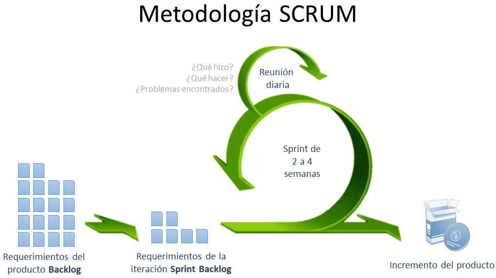

Scrum
26 de Octubre de 2020
-------
La primera generación de telefonía móvil estaba basada en un conjunto de celdas o células interconectadas, que daban servicio a los dispositivos que se encontraban dentro de su amplia zona de cobertura. De ahí el nombre con el que se los conoció inicialmente, "celulares".
No todas las redes estaban basadas en los mismos protocolos, dependían bastante de sus fabricantes, no era fácil interconectarlas ni utilizar los mismos terminales en distintas redes.
Capítulo 5: Planificación de Scrum y Compromiso Colectivo
No esperar lo Inesperado

- Odiamos cuando trabajamos en algo que se descarta.
- Necesitamos una forma de asegurarnos de que solo estamos creando software que la gente realmente va a utilizar.
- Los usuarios que se quejan de que se pierden cosas importantes y se abruman por cosas que no recuerdan haber pedido.
Historias de usuarios, velocidad y prácticas de scrum generalmente aceptadas
- Los usuarios y las partes interesadas odian la imprevisibilidad.
- Hay que asegurarse de que no haya sorpresas en el momento de entregar el producto final.
- Crear software "funcional" real, significa crear software que realmente ayude a los usuarios a hacer su trabajo.
Vuelta de la victoria
- La única forma de aprender es tener problemas.
- Los momentos difíciles con los que te encuentras les dan una razón para trabajar juntos y pensar en cómo ser más efectivos.
Valores de Scrum revisados
- Cada proyecto tiene desafíos y problemas.
- Cuando está probando una nueva metodología o práctica por primera vez, esos problemas pueden agrandarse por falta de experiencia, malentendidos y errores habituales.
- En lugar de tratar de prevenir errores, es mejor aprovechar para crear experiencias de aprendizaje para el equipo.